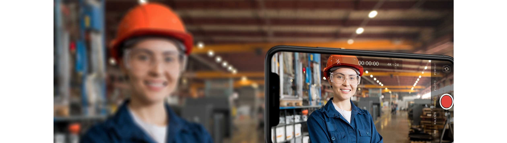
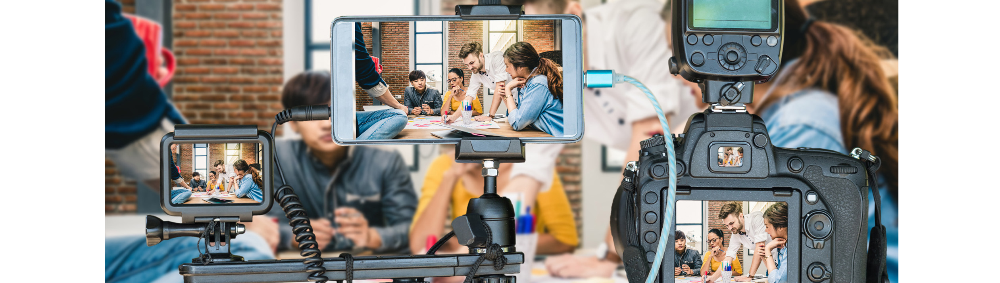

La vidéo est le média de communication incontournable pour promouvoir
vos activités, pour
informer, sensibiliser, enseigner.
Bien plus efficace et économe que les mailings, les newsletters, les brochures ...
Nous vous accompagnons dans la création de vos vidéos en vous proposant nos services "Do It Yourself" afin de vous autonomiser et vous rendre le contrôle sur vos réalisations audiovisuelles.
Que ce soit par des formations, du coaching ou grâce à notre plateforme innovante de montage vidéo en ligne, nos professionnels de l’image sont à votre service
Alors c'est parti ! Filmez dès maintenant ! Vous avez tout ce qu’il vous faut dans votre poche.

Initiation gratuite autour d'une rencontre
Qu’est-ce qu’un film de communication, comment ça se prépare, quelles sont les étapes clés,
plein de petits trucs et astuces pour bien démarrer votre film et utiliser notre plateforme
mydiyvideo.com
Selon vos disponibilités, nous nous déplaçons gratuitement dans vos locaux et
en 1 heure, vous aurez déjà une bonne idée des moyens qui sont à votre disposition pour réaliser
vos propres films de com.
Formation sur les techniques de tournage
Vous avez forcément un téléphone ou une petite caméra pour filmer, mais vous ne savez pas trop
comment l’utiliser pour obtenir des images exploitables.
Nous vous proposons notre formation sur les techniques de base d’un tournage
réussi :
cadrages, expositions, mouvements de caméra, techniques d’interview, …
Notre formateur se déplace dans vos locaux pour 4h avec son matériel et
s’adapte au vôtre.
La formation est destinée à un petit groupe jusqu’à 6 personnes et alterne des
contenus
théoriques avec des exercices de mise en pratique.
Coaching audiovisuel
Vous êtes sur un projet réel de réalisation d’un film de com, mais vous avez besoin d’un peu
plus de support de la part d’un professionnel.
Nous vous proposons un
accompagnement
personnalisé sur les différentes phases de votre vidéo.
Que ce soit pour la scénarisation, le tournage, les interviews …
nous pouvons vous apporter
une aide à distance ou sur place selon votre convenance.

La plateforme de montage vidéo mydiyvideo.com
Le montage vidéo est certainement la phase la plus consommatrice de temps et celle qui demande
le plus de compétences techniques.
Notre plateforme mydiyvideo.com vous permet de gagner du temps
et de vous débarrasser de cette
étape épineuse à moindre coût. En effet, en fonction de la matière que vous
chargez, vous pouvez
obtenir un film de qualité dès 55€. Soit approximativement 10 fois moins chers qu’avec
une
agence de com traditionnelle.
Il vous suffit de charger les vidéos et les photos que vous voulez voir montées dans votre
espace personnel sur notre site. Indiquez alors en quelques mots la façon dont vous voulez voir
votre film agencé et nos monteurs professionnels s’occuperont du reste.
Pas de mauvaises
surprises : avant même de passer commande, vous aurez une vision claire et précise du coût et du
temps nécessaire à la réalisation de votre projet. Ce n’est seulement qu’après avoir validé le
montage final que vous recevrez la facture pour paiement.
Inscrivez-vous dès maintenant pour tester la plateforme, ça ne coûte rien !
Une économie locale
En utilisant les services de mydiyvideo.com, vous participez à l’économie
locale. Nos monteurs
vidéo professionnels qui s’occuperont de vos films, tout en étant proche de chez vous, n’ont pas
besoin de se déplacer ni dans une maison de production ni dans vos locaux. Ils travaillent à
distance, chez eux, sur les mêmes outils que les studios de production.
Grâce à notre
plateforme
en ligne nous assurons la coordination des projets et le respect de la qualité. C’est comme ca
que mydiyvideo.com assure des petits prix sur vos montages vidéo tout en gardant une qualité et
un service professionnel : pas de frais de déplacement, pas de coût dans une
infrastructure
lourde et une participation à 100% sur l’emploi local.
Ils en parlent
Pour aller plus loin
Vous avez besoin de professionnels pour gérer et réaliser votre projet de A à Z,
faites appel à l’expertise de Pragmagora Creative Media.
Que ce soit pour
du
tournage sous toutes ses formes, du montage, de l’animation, du motion design mais également du
sous-titrage, de la voix-off, de l’habillage sonore, Pragmagora Creative Media vous apportera
des services professionnels sur mesure.